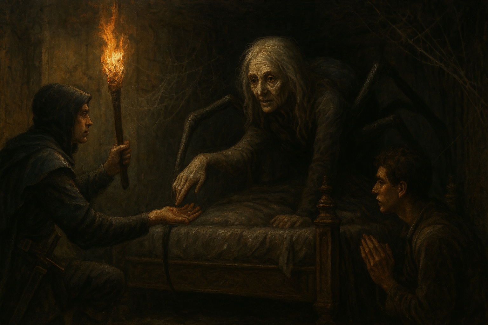

Chapter 2: Mother of Ruins
The Gift from Alfenor


The Gift from Alfenor
15048.12.02
看見四名夥伴啟程前往王宮，華生思索著在與貴族的晚宴前應該要先把握時間去哪裡。與大衛醫師詢問後，他計劃先前往舊城區（貧民窟）一趟，據說那裡有不少瘋子，有可能從那裡問到一些和蜘蛛神教有關的線索。華生準備要出發，但蘇加魯似乎身體不太舒服，因此無法陪同前往。
依照大衛醫師給予的指示，華生走到了舊城區，一股濃濃的腐臭味撲鼻而來，但是路上一個人也沒有。華生走著，卻不小心被地上的凹洞絆到腳而面朝下的跌了下去。撐起身子，華生仔細研究了一下這個凹洞，卻發現它不過是地磚之間的縫隙被鈍器鑿開所產生的洞罷了。不過華生還是不太放心，於是靠到附近的牆邊坐了下來，用自己的老鼠鑽到洞內去探索。然而洞很淺，就連老鼠也一下就無法繼續鑽下去了。
華生得不到什麼線索，卻發現一邊的路口竟然有個人影探出頭來，似乎是在監視他。為了確認那人是不是能提供他線索的瘋子，華生快速地跑向那人，而那人也趕緊縮回路口，不見人影。跑到了路口，華生準備轉彎，迎接他的卻是拳頭，是剛才監視他的那名年輕男子。
華生試圖和男子交涉，表示自己想得到一些資訊，且願意提供東西來交換。男子思索後，先告訴了華生在舊城區的規矩：一、不要做出太誇張可疑的動作，發生什麼事情都要盡可能裝作沒事；二、不要穿的太華麗，低調點，甚至弄髒點，才不會引人注目；三、和人盡量不要有任何正面的眼神接觸，看著地上最安全。雖然這些話聽起來有點可疑，華生還是選擇相信了。
「貧民窟的人只是窮，不是笨。」
貧民窟的年輕男子拉希姆
華生試著想問關於蜘蛛神的線索。一開始年輕男子不願多加透露，但是華生掏出了一根來自圖伊特身上的羽毛，表示這是很珍貴的羽毛，送給男子，於是男子便在他耳邊，提到自己知道有人可以給他更多他想要的資訊。華生想詢問更多，但男子表示不便透露太多，等等見到那個人，可以問他。華生接受了這個提議，便跟著男子穿梭在貧民窟的巷弄之內，短短五分鐘內，華生已經失去了方向感，但也繞到了一個他沒有想像過存在的小廣場，廣場對面，則是一座看起來漂亮卻破舊，佈滿蜘蛛絲的小神殿。男子表示其實蜘蛛神教在舊城區是很主流的信仰，自己雖然沒有信，但這個地方是大家都知道的。最後，男子提醒華生，要對那個人有禮貌，而華生也必須給那人吸一點血，做為找他詢問的代價。
推入了神殿的門口，裡面是全黑的。男子遞給了華生一個火把，自己也拿了一跟，點燃後，兩人便一同走入了漆黑的房間。擁有夜視的華生，發現房子內盡是破舊的傢俱，上面佈滿蜘蛛絲。男子接著走到了前方的門口，敲了敲門。華生聽見了門內傳來一陣嘶嘶聲，男子便推開了門，帶著華生走入。雖然拿著火把，華生也有夜視，但在華生的眼前，只能看到一座設計精緻漂亮，但十分破舊的床。華生看見男子跪了下來，對著眼前的床喊了聲「母親大人，我帶了個人過來」，便也模仿起來，跪了下來，向著前方的床喊了聲「母親大人」。華生聽見了床板上傳來了一陣輕微的敲打聲。
對著床，華生向母親大人詢問了關於自己身上詛咒的事，並將詛咒的印記秀給母親大人看。母親大人緩緩從後方向前移動，華生這才看到一張充滿皺著的年長女性臉孔，出現在黑暗之中，但表情難以解釋。華生也看見了從黑暗之中，伸出了一隻如觸手般的東西，緩緩地向他伸出，最終貼在了他的詛咒圖形上。接著，原本黑色的圖案發紅，像是紅腫一般，華生也感受到了燒灼感蔓延全身。隔了幾分鐘後，觸手慢慢伸了回去，華生似乎感覺到舒暢了許多。向母親大人感謝後，華生想詢問更多關於蜘蛛神教的問題，但母親大人沒有給予回應。最終，華生向母親大人道謝，並表示自己兩天內還會再回來，接著，他便聽見床板上微微的敲打聲，母親大人向後退，向華生說了一句「帶你的朋友們來」，最後消失在床板後漆黑的洞穴內，床上空空如也。
走出神殿外，華生和男子詢問，得知母親大人幫了貧民窟的人很多事，因此受到貧民窟堅定的支持。男子也表示，華生是他看見第一個前來求助，卻沒有被母親大人吸血的人，讓他感到非常驚訝。最後，男子請求華生不要將這件事讓任何貴族知道，以免貴族前來對母親大人不利。華生允諾後，在男子的帶領下走回來原本來的道路。華生向男子表示自己兩天內還會再回來，得知他的名字是拉辛，並表示自己會帶其他東西過來給他作為感謝。拉辛則告訴華生，如果沒有見到他，其他人也都知道母親大人，要給他的東西交給母親大人就好。於是華生便離開了舊城區，準備回大衛醫師的診所了。
離開了王宮，圖伊特決定帶頭，卻意外地朝著錯誤的方向前進。走了好一段時間，伊努感覺不對，試著向衞兵詢問，卻被衛兵看不起，就連圖伊特詢問也沒成功。伊努決定向反方向走，帕拉丁也跟在後面，最後才是圖伊特。因為無法溝通的關係，圖伊特透過心靈感應，向帕拉丁確認走的方向，卻只讓他覺得帕拉丁和伊努可能在耍他。走了好一段時間，三人終於走到了來的入口，圖伊特才發現一直都是自己走錯路了。
穿過漆黑的通道，三人重新回到了王宮花園，外頭天色已黑。帕拉丁想起華生似乎和貴族約在這裡要去參加晚宴，因此提議找找看華生，卻發現沒有找到。伊努決定回診所去，於是大家在伊努的帶領下，朝著診所走。
回到診所的華生，在門口似乎聽到了診所內傳出了蘇加魯說著「屁股」、「癢」之類的關鍵字，覺得有點奇異，於是先敲了敲門，才進入診所，診所內，大衛醫師面色尷尬，而丹尼斯還在昏睡中，蘇加魯則裝作沒事一樣。華生在診間簡單休息後，清洗了衣物，準備出發前往貴族的晚宴，但蘇加魯依然表示身體不適，因此不跟著華生一起去晚宴了。
日落時分，華生來到了王宮花園內，看見潘蜜拉和伯納德在花園內散步，於是前往搭話。伯納德對於蘇加魯沒有出現感到可惜，在華生說明蘇加魯身體不適後，伯納德提議在晚宴後可以陪同化名露西亞小姐的華生回到大衛醫師的診所，順便探望蘇加魯。接著潘蜜拉便帶領兩位來到了他家的門口。
回到了診所，伊努聽見了裡面傳來蘇加魯大聲地叫喊「屁股！」的聲響，於是便推開了們，走了進去。然而，他看見蘇加魯似乎是對著牆壁正在大叫，遠觀的大衛醫師和顯然已經清醒的丹尼斯則露出困惑，甚至有點害怕的眼神，正在看著蘇加魯。下意識的，伊努朝著蘇加魯大喊的牆壁擲出火把，木製的牆壁便馬上延燒，但蘇加魯似乎一點也不在乎，繼續對著牆壁咆哮。
眼看失火，帕拉丁趕緊跑去外面的井口，卻發現自己根本沒有拿水桶，於是只好折回診所，向大衛醫師詢問到倉庫有木桶可以裝水；圖伊特試著用自己的手將火拍熄，卻沒有幫助；大衛醫師結結巴巴地表示要保護自己的弟弟，便趕緊帶著丹尼斯跑出門外；伊努也表示要保護丹尼斯，所以也跟著跑了出來。
一陣忙竄之後，帕拉丁的水無法澆熄越燒越旺的火，但蘇加魯還在對著牆壁大叫。圖伊特說服了蘇加魯，如果他想要屁股，可以去找大衛醫師，他一定有他想要的屁股。被說服後，蘇加魯便悠悠地走了出去，去找大衛醫師。當所有人都走出看起來已經要沒救的診所後，伊努朝著診所的牆壁打穿了一個洞，診所的天花板瞬間坍塌了下來，就像大衛醫師的臉色一樣。火剩下不多了，帕拉丁用最後裝的井水，把火滅完後，將水桶放回了原本應該要是倉庫的那個空間去。
聽著不斷喊著屁股的蘇加魯，伊努實在看不下去，便將他電暈。接著，伊努在蘇加魯身上搜刮，卻沒找到任何金錢。好奇之下，伊努也檢查了一下蘇加魯的屁股，卻發現完全沒有異狀。
大衛醫師和丹尼斯眼看診所毀了，決定離開這個廢墟，但帕拉丁表示要告訴他們一個故事。大衛醫師表示，診所都毀了，至少也得請他和他弟弟吃頓飯吧，說什麼故事？於是帕拉丁便決定帶大衛醫師、丹尼斯，和其他冒險夥伴們一起用餐，地點則是大衛醫師推薦的艾德蒙餐酒館。在各種嘗試與評估後，圖伊特把暈倒的蘇加魯扛了起來，一起帶到餐酒館去了。
來到餐廳門口，店員熱切地歡迎大家，帕拉丁則不經意的露出了紫羅蘭的勳章，向店員表示希望可以來用餐。店員看見勳章後，熱情地將大家帶進餐廳，並安排了包廂，給帕拉丁爵士使用。
帕拉丁為大衛醫師、丹尼斯和自己個點了一份高檔的餐點，也給蘇加魯外的每個人一杯啤酒，圖伊特和伊努則決定取出自己的乾糧作為晚餐就好，蘇加魯則攤在椅子上。
在服務生準備餐點的同時，帕拉丁向大衛醫師和丹尼斯説了一則來自遙遠的東方，名叫「華王優劣」的故事，故事之精彩，在說完時，全餐廳的顧客，甚至是蜘蛛王都跑到包廂內拍手了（並沒有，不要瞎掰好嗎？）。不久後，有人敲了敲包廂的門，走進來的是餐酒館的老闆艾德蒙。艾德蒙向帕拉丁爵士問好，也簡單介紹了一下自己的餐酒館，接著在帕拉丁的要求下，也找來了這裡的店長路易斯。路易斯請服務生準備了高檔的酒水，給帕拉丁等人享用。
潘蜜拉推開門，帶領伯納德和華生走入了他的宅邸。大廳內已經坐了幾名貴族，大家輕鬆的閒聊著。華生坐下後，也輕鬆聽著大家的話題。不久後，潘蜜拉便回到大廳，邀請大家共進晚餐。保險起見，華生將自己的老鼠留在大廳，以便隨時有特殊狀況，需要查看。
餐廳在房子的後方，燈光幽暗，氣氛十分不錯。長桌的短邊，坐著潘蜜拉，兩側則分別有四張椅子，讓今天來用餐的貴族們都有座位可以坐。華生和伯納德坐在最遠端的兩側。潘蜜拉敲了敲空酒杯，向大家介紹今天加入的新朋友，化名露西亞小姐的華生，華生則站了起來，和大家簡單的自我介紹，表示自己的家族是從事翡翠生意的。
接著，潘蜜拉的傭人們紛紛將酒水倒給賓客們，也陸續上了餐點。在華生的請求下，潘蜜拉將同桌的貴族們介紹給他認識。除了潘蜜拉和伯納德外，另外還有做鑽石生意的亞辛・烏斯塔、做毛皮生意的波特・洛、做觀賞植物生意的衛斯理・凡斯、做奴隸生意的馬科姆・希克斯、做皮革生意的昆丁・雷納德，以及並沒有介紹做什麼生意的馬可斯・詹斯。用餐期間，華生偷偷打量這些貴族們，發現神秘的馬可斯似乎朝他眨了一下眼。
用餐完畢後，潘蜜拉再次站起身，向大家宣佈今天最重要的事：是時候表態自己是否支持國王了。潘蜜拉表示，等等會讓大家閉上雙眼，舉手表示：若支持國王，舉起右手；反對國王，則舉起左手。晚宴後，大家則可以分道揚鑣。華生打斷，表示大家應該要互相分享各自對國王的資訊，以進行討論，得到對大家最有利的決策，但此時，馬可斯打斷了他，表示每個人都有自己不想揭露的消息，也都有各自的盤算。雖然這樣的決策可能會很有風險，但華生發現大家都沒有要反駁馬可斯的意思，便放棄了。
在潘蜜拉的引導下，大家閉上雙眼，並舉起了對應的手。華生決定支持國王，但其他人的決策，他不知道。等大家都睜開眼睛，潘蜜拉感謝大家，並表示不送客了，大家紛紛離席。伯納德等待著華生一同離開，但華生表示自己要借用一下廁所。匆匆跑向廁所後，華生將視線切換回到大廳的老鼠身上，看見賓客們紛紛向外走離，路上也沒有人說話，也沒能看出誰和誰特別親近。但是老鼠看見了馬可斯，對著躲在櫃子上方的牠，揮了揮手，露出了意味深長的微笑。
離開了潘蜜拉的宅邸，華生和伯納德一同前往大衛醫師的診所。一路上，華生感覺有個身影一直在附近，卻又無法清楚感受到是誰或是什麼。伯納德也都沒有反應。花了些時間，兩人終於來到了診所，卻只看見被火燒過的廢墟。在和附近居民詢問後，他們猜測夥伴們和大衛醫師應該是到了艾德蒙餐酒館用餐去了。
蘇加魯逐漸甦醒，看見自己坐在餐廳的桌邊，帕拉丁正滔滔不絕地在說著些什麼。看見蘇加魯清醒後，大衛醫師趕緊詢問他的狀況，也告訴他剛剛他一直神智不清，不斷喊著屁股。蘇加魯狀況暫時沒事，也了解了剛剛發生的各種事。接著，大衛醫師和冒險者們談判，最終達成了共識——在一個月內生出100金幣，作為診所毀壞的賠償。
不久後，華生和伯納德來到包廂外了。見到了蘇加魯，伯納德又變得支支吾吾。伯納德試著關心蘇加魯，蘇加魯念頭一轉，便想透過伯納德對自己的好感，敲詐100枚金幣，但伯納德沒有辦法給他。伯納德邀請蘇加魯和他去喝一杯，在協商下，其他冒險者們也一同跟上了。
伯納德先帶大家到了他家去。諾姆家的宅邸藏在巷弄中，雖然看得出比一般居民好上不少，但也很明顯的十分陳舊。依伯納德的說法，原本四名傭人，現在只剩下兩名，專門留下來照顧他的母親。
進到伯納德家，冒險者們透過圖伊特的心靈感應，討論著是否要藉機打劫，蘇加魯強硬的要大家今晚就行動，否則他就殺了伯納德。同時，伯納德邀請大家來到二樓的客房，並邀蘇加魯一起到三樓，見見他的母親。
三樓只有兩個房間，小的房間是給傭人住的，大的房間，則是伯納德母親的臥房。輕輕推開，臥房內一片黑暗，只有兩名傭人手上的蠟燭發著光。伯納德緩緩走到房間的臥床前，跪了下來，向他的母親大人請安，蘇加魯也照做。蘇加魯看見，在「母親大人」前，伯納德似乎感到非常畏懼。對於這個奇異的景象，蘇加魯默默觀察。在兩人離開房間後，伯納德的神情依然沒有回到原本和蘇加魯相處時的羞澀感。
其他冒險者們紛紛在客房內討論著今晚是否要有所行動，同時華生也和大家分享他在舊城區看見的「母親大人」。透過圖伊特的心靈感應，他們發現蘇加魯也在三樓見到了一位這樣的「母親大人」，而且和華生見到的「母親大人」幾乎沒有差異。
不久後，伯納德便帶著蘇加魯到附近的酒館喝酒。其他冒險者們疑似聽見了從三樓傳來的敲打聲，擔心自己在客房的行跡會被監視，於是華生和伊努決定到外頭走走。
幾杯下肚後，蘇加魯試圖從伯納德那裡套些話，伯納德卻自顧自地喝酒，都不說話，於是蘇加魯決定先離開，往伯納德家回去。
回到伯納德家的伊努，因為自己身上的蜘蛛詛咒似乎加劇了，想盡快找母親大人求助，因此在華生強烈反對的狀況下，還是上了三樓，不過圖伊特也一起陪同著。兩人來到了大臥室，推開門後，跪在床前，試著和母親大人溝通。母親大人從遠處伸出他的觸手，碰向伊努，低聲唸到「你不屬於這個世界。」，隨即伊努昏了過去。圖伊特見狀，想要阻止母親大人，自己卻也昏了過去。
蘇加魯回來後，華生告訴他伊努和圖伊特上樓已久，都沒有回來，於是三人備好武器一同上樓。先推開傭人房，兩名傭人正昏睡在床上，而且身形乾枯，感覺非常不健康，但沒有被魔法控制的跡象。來到母親大人的臥房，床上沒有躺臥的身形，但床的左側天花板懸掛了一個巨型的繭。
蘇加魯試著用武器將繭打下，但因為高度太高，沒辦法直接打下。由於不知道繭內有什麼，蘇加魯盡可能小心翼翼的用武器切開繭，卻還是傷到了在裡頭昏迷的圖伊特。花了好長一段時間，圖伊特終於掉出繭外，但身上裹著一層米白、褐色的液體，圖伊特完全無法動彈，冒險者也無從判斷他的生死，但他們確定在房間內沒有找到伊努。同時，他們也發現在母親大人的床頭有個漆黑的洞，動口旁有個疑似地標的圖案。華生將老鼠放了進去，卻發現馬上失去對老鼠的控制。
冒險者們感覺很不對勁，不知道他們面對的母親大人究竟是什麼，於是決定收拾行囊，先離開這個是非之地。然而，推開房門，華生看見了一具屍體躺在門口，是這家的主人，伯納德。他的身體像是被吸乾般的毫無血色。柵欄外的那人，是潘蜜拉和一群舉著火把的暴民。華生試著和潘蜜拉溝通，卻得不到有用的資訊，暴民們大喊著「異教徒」，邊衝進柵欄內，將火把丟向伯納德的房子。華生抱起伯納德，與扛著圖伊特的蘇加魯以及帕拉丁趁機逃走。
冒險者們逃到了蘇加魯剛才去的酒館，黑暗面。小心潛入後，沒有得到多少有用的消息，也沒有檢測到任何魔法殘留。冒險者們考慮往貧民窟移動。
15048.12.03
過了午夜，帕拉丁想起了過去曾在貧民窟住過的旅店城門旅店，於是大家便朝著城門旅店的方向前進，而他們身後，一個神秘的身影悄悄跟隨。
在城門旅店門口前，圖伊特的脖子被身後一名陌生人用匕首架住了。陌生人質問冒險者們為什麼來到舊城區？行蹤詭異，還扛著兩個屍體，從未出現在舊城區的生面孔，在午夜時分偷雞摸狗的走著，讓他感到警戒。冒險者說明來意，表示只是要入住旅店，但同時也掏出武器，對著陌生人威脅，最終陌生人不僅沒有恫嚇到冒險者們，還為了賠罪，決定幫他們付旅店的錢。
來到城門旅店，老闆凱文意興闌珊的和大家打招呼，同時冒險者們也得知這名先前襲擊他們的陌生人名為伊，是住在貧民窟的年輕人。凱文為冒險者們準備了一間二樓的大通鋪，眾人便到樓上準備休息。
冒險者們同步了兩邊活動的狀況，帕拉丁也將圖伊特暫時收在背包內的貓頭鷹奧利佛的屍體取出。大家也將圖伊特先擺在牆角，讓只能以視覺感知的他至少可以看到大家。大家討論著隔日要透過華生的能力，從奧利佛口中搜集點情報，另外也要去貧民窟內母親大人的寺廟，最後再去拜訪潘蜜拉。
睡前，伊下了樓，想和凱文說一下，請他幫大家準備早餐，但他發現凱文已經睡著了，於是只好寫了張紙條壓在櫃台上。
15048.12.02
Seeing the four companions setting off for the palace, Watson was thinking about where to go before the dinner with the nobles. After asking Dr. David, he planned to go to the old city (slums) first. It is said that there are many madmen there, and it is possible to get some clues related to the Spider Cult from there. Watson is ready to leave, but Sugalu seems to be not feeling well, so he cannot accompany him.
Following the instructions given by Dr. David, Watson walked to the old city. A strong rancid smell assaulted his nostrils, but there was no one on the road. Watson was walking, but accidentally tripped over a hole in the ground and fell face down. Propping himself up, Watson carefully studied the hollow, only to find that it was just a hole created by a blunt instrument digging into the gaps between the floor tiles. However, Watson was still not reassured, so he sat down against the nearby wall and used his mouse to crawl into the hole to explore. However, the hole was so shallow that even the mouse could not continue drilling.
Watson couldn't get any clues, but found a figure sticking his head out from the intersection on one side, seeming to be monitoring him. In order to confirm whether the man was a madman who could provide him with clues, Watson quickly ran towards the man, and the man quickly retreated to the intersection and disappeared. When he reached the intersection, Watson was about to turn, but what greeted him was a fist from the young man who had just been watching him.
Watson tried to negotiate with the man, saying that he wanted to get some information and was willing to provide something in exchange. After thinking about it, the man first told Watson the rules in the old city: 1. Don’t make too exaggerated and suspicious actions, and try your best to pretend that nothing happens. 2. Don’t dress too gorgeously, be low-key, or even dirty, so as not to attract attention. 3. Try not to have any direct eye contact with others, it is safest to look at the ground. Although these words sounded a bit suspicious, Watson still chose to believe them.
"People in the slums are just poor, not stupid."
Rashim, the young man from the slums
Watson tried to ask for clues about the Spider God. At first, the young man was unwilling to reveal more, but Watson took out a feather from Tweeter and said that it was a very precious feather and was given to the man. So the man mentioned in his ear that he knew someone who could give him more information he wanted. Watson wanted to ask more, but the man said it was inconvenient to reveal too much. He could ask him when he saw the person. Watson accepted the proposal and followed the man through the alleys of the slum. In just five minutes, Watson had lost his sense of direction, but he also arrived at a small square that he had never imagined existed. Opposite the square was a small temple that looked beautiful but shabby and covered with spider silk. The man said that the Spider God Cult is actually a very mainstream belief in the old city. Although he does not believe in it, everyone knows about this place. Finally, the man reminded Watson to be polite to that person, and Watson must also suck some blood from that person as a price for asking him.
pushed into the door of the temple, and it was completely dark inside. The man handed Watson a torch and took one himself. After lighting it, the two walked into the dark room together. Watson, who has night vision, found that the house was full of shabby furniture covered with spider silk. The man then walked to the front door and knocked. Watson heard a hissing sound coming from the door, and the man opened the door and walked in with Watson. Although holding a torch, Watson also had night vision, but in front of Watson, he could only see a beautifully designed but very shabby bed. Watson saw the man kneeling down and shouted "The Mother, I brought someone over" to the bed in front of him, so he imitated the man, knelt down and shouted "The Mother" to the bed in front of him. Watson heard a slight knocking sound on the bed board.
Facing the bed, Watson asked The Mother about the curse on himself, and showed the mark of the curse to The Mother. The Mother slowly moved forward from behind, and Watson saw a wrinkled face of an older woman appearing in the darkness, but her expression was difficult to explain. Watson also saw something like a tentacle stretching out from the darkness, slowly reaching out towards him, and finally sticking to his curse graphic. Then, the originally black pattern turned red, like a swelling, and Watson also felt a burning sensation spreading throughout his body. After a few minutes, the tentacles slowly stretched out, and Watson seemed to feel much more comfortable. After thanking The Mother, Watson wanted to ask more questions about the Spider Cult, but The Mother did not respond. Finally, Watson thanked The Mother and said that he would come back within two days. Then, he heard a slight knocking sound on the bed board. The Mother stepped back and said "bring your friends" to Watson, and finally disappeared into the dark cave behind the bed board. The bed was empty.
Out of the temple, Watson asked the man and learned that The Mother had helped the people in the slums a lot, so he received firm support from the slums. The man also said that he was very surprised that Watson was the first person he saw who came to seek help but was not sucked by The Mother. Finally, the man asked Watson not to let any nobles know about this, lest the nobles come and harm The Mother. After Watson agreed, he walked back to the original path under the leadership of the man. Watson told the man that he would come back within two days, learned that his name was Rashim, and said that he would bring other things to him as a thank you. Rashim told Watson that if he did not see him, others would also know The Mother, and just give him the things he wanted to give to The Mother. So Watson left the old city and prepared to return to Dr. David's clinic.
Leaving the palace, Tweeter decided to take the lead, but unexpectedly headed in the wrong direction. After walking for a long time, Inu felt something was wrong. He tried to ask the guard, but was looked down upon by the guard. Even Tweeter's inquiry was unsuccessful. Inu decided to go in the opposite direction, followed by Paladin, and finally Tweeter. Due to the inability to communicate, Tweeter confirmed the direction to Paladin through telepathy, but it only made him feel that Paladin and Inu might be playing tricks on him. After walking for a long time, the three finally reached the entrance. Tweeter realized that he had been going the wrong way all along.
Through the dark passage, the three of them returned to the palace garden. It was already dark outside. Paladin remembered that Watson seemed to have an appointment with a noble to attend a dinner here, so he suggested looking for Watson, but found that he could not find it. Inu decided to go back to the clinic, so everyone walked towards the clinic under the leadership of Inu.
When Watson returned to the clinic, he seemed to hear Sugalu saying keywords such as "butt" and "itch" at the door. He felt a little strange, so he knocked on the door before entering the clinic. Inside the clinic, Dr. David looked embarrassed, while Dennis was still sleeping, and Sugalu pretended to be fine. After a brief rest in the clinic, Watson washed his clothes and prepared to go to the noble dinner party. However, Sugalu still expressed that he was feeling unwell, so he did not go to the dinner party with Watson.
At sunset, Watson came to the palace garden and saw Pamela and Bernard walking in the garden, so he went to talk to them. Bernard felt sorry that Sugalu did not show up. After Watson explained that Sugalu was unwell, Bernard suggested that after the dinner, he could accompany Watson, whose pseudonym was Miss Lucia, back to Dr. David's clinic and visit Sugalu. Then Pamela led the two of them to the door of his house.
Back at the clinic, Inu heard the sound of Sugalu shouting "butt!" loudly from inside, so he pushed them away and walked in. However, he saw that Sugalu seemed to be shouting at the wall. Dr. David, who was watching from a distance, and Dennis, who was obviously awake, were looking at Sugalu with confusion and even a little fear in their eyes. Subconsciously, Inu threw a torch at the wall where Sugalu was shouting, and the wooden wall immediately burned, but Sugalu didn't seem to care at all and continued to roar at the wall.
Seeing the fire, Paladin hurriedly ran to the wellhead outside, but found that he did not have a bucket at all, so he had to go back to the clinic and asked Dr. David that there were barrels in the warehouse to fill with water; Tweeter tried to extinguish the fire with his own hands, but it did not help; Dr. David stammered that he wanted to protect his brother, and hurriedly took it with him Dennis ran out of the door; Inu also said that he wanted to protect Dennis, so he also ran out.
After a while of running around, Paladin's water could not put out the growing fire, but Sugalu was still screaming at the wall. Tweeter convinced Sugalu that if he wants an ass, he can go to Dr. David, he must have the ass he wants. After being convinced, Sugalu walked out leisurely to find Dr. David. After everyone walked out of the seemingly hopeless clinic, Inu punched a hole in the wall of the clinic, and the ceiling of the clinic instantly collapsed, just like Dr. David's face. There was not much fire left. Paladin used the last well water to extinguish the fire and returned the bucket to the space that was supposed to be the warehouse.
Listening to Sugalu who kept shouting butt, Inu couldn't stand it any longer, so he stunned him. Inu then searched Sugalu's body but did not find any money. Out of curiosity, Inu also checked Sugalu's butt, but found that there was no abnormality at all.
Dr. David and Dennis saw the clinic destroyed and decided to leave the ruins, but Paladin said he wanted to tell them a story. Dr. David said that since the clinic was destroyed, at least he and his brother should be treated to a meal. What story is that? So Paladin decided to take Dr. David and Dennis to dine with other adventure partners at the restaurant Edmond recommended by Dr. David. After various attempts and evaluations, Tweeter picked up the fainted Sugalu and took them to the restaurant together.
Arriving at the door of the restaurant, the clerk warmly welcomed everyone. Paladin inadvertently showed his violet medal and expressed to the clerk that he hoped to come and dine. After the clerk saw the medal, he enthusiastically brought everyone into the restaurant and arranged a private room for Sir Paladin.
Paladin ordered a high-end meal for Dr. David, Dennis and himself, and also gave everyone except Sugalu a glass of beer. Tweeter and Inu decided to take out their own dry food for dinner, and Sugalu spread it out on a chair.
While the waiter was preparing the meal, Paladin told Dr. David and Dennis a story from the far east called "The Advantages and Disadvantages of King Hua". The story was so exciting that when it was finished, all the customers in the restaurant, even the Spider King, ran to the box and clapped their hands (no, please don't make a fool of yourself, okay?). Not long after, someone knocked on the door of the private room, and it was Edmond, the owner of the restaurant, who walked in. Edmond said hello to Sir Paladin and briefly introduced his restaurant. Then at Paladin's request, he also called in the store manager Lewis. Lewis asked the waiter to prepare high-end drinks for Paladin and others to enjoy.
Pamela opened the door and led Bernard and Watson into his mansion. Several nobles were already sitting in the hall, and everyone was chatting casually. After Watson sat down, he relaxed and listened to everyone's topics. Soon after, Pamela returned to the hall and invited everyone to dinner. To be on the safe side, Watson leaves his mouse in the lobby in case there is a special situation that needs to be checked at any time.
The restaurant is at the back of the house, with dim lighting and a very nice atmosphere. Pamela sat on the short side of the long table, and there were four chairs on both sides, so that the nobles who came to dine today could all have seats. Watson and Bernard sit on either side of the far end. Pamela knocked on the empty wine glass and introduced to everyone the new friend who joined today, Watson, whose pseudonym is Miss Lucia. Watson stood up and briefly introduced himself to everyone, saying that his family is engaged in the jade business.
Then, Pamela's servants poured drinks to the guests one after another, and also served meals one after another. At Watson's request, Pamela introduced the nobles at the table to him. In addition to Pamela and Bernard, there are also Yashin Usta, who is in the diamond business, Porter Lowe, who is in the fur business, Wesley Vance, who is in the ornamental plant business, Malcolm Hicks, who is in the slave business, Quinton Leonard, who is in the leather business, and Marcus Jens, who does not describe his business. During the meal, Watson secretly looked at these nobles and noticed that the mysterious Marcus seemed to wink at him.
After the meal, Pamela stood up again and announced to everyone the most important thing today: it was time to express whether she supported the king. Pamela said that waiting will make everyone close their eyes and raise their hands: if they support the king, raise their right hand; if they oppose the king, raise their left hand. After the dinner, everyone can go their separate ways. Watson interrupted and said that everyone should share their information about the king with each other to discuss and get the decision that is best for everyone. But at this time, Marcus interrupted him and said that everyone has information that they do not want to reveal, and they also have their own plans. Although such a decision may be risky, Watson found that no one had any intention to refute Marcus, so he gave up.
Under Pamela’s guidance, everyone closed their eyes and raised their corresponding hands. Watson decided to support the king, but he did not know the decisions of others. When everyone opened their eyes, Pamela thanked everyone and said she would not see off the guests, and everyone left the table. Bernard waited for Watson to leave together, but Watson said he wanted to borrow the toilet. After hurriedly running to the toilet, Watson switched his gaze back to the mouse in the hall and saw the guests walking out one after another. No one spoke on the road, and he couldn't tell who was particularly close to whom. But the mouse saw Marcus, waved to him hiding above the cabinet, and smiled meaningfully.
Leaving Pamela's mansion, Watson and Bernard went to Dr. David's clinic together. Along the way, Watson felt that a figure was always nearby, but he could not clearly feel who or what it was. Bernard didn't respond either. After taking some time, the two finally arrived at the clinic, but only saw the ruins burned by the fire. After asking nearby residents, they guessed that the friends and Dr. David had gone to Edmond’s Diner for dinner.
Sugalu gradually woke up and saw himself sitting at the table in the restaurant. Paladin was talking nonstop. After seeing Sugalu wake up, Dr. David quickly asked him about his condition and told him that he had been unconscious and kept yelling butt. Sugalu's situation is okay for the time being, and he understands various things that just happened. Dr. David then negotiated with the adventurers and finally reached a consensus - 100 gold coins would be generated within a month as compensation for the destruction of the clinic.
Soon after, Watson and Bernard came outside the box. Seeing Sugalu, Bernard became hesitant again. Bernard tried to care about Sugalu, but Sugalu suddenly changed his mind and wanted to use Bernard's favor towards him to extort 100 gold coins, but Bernard had no way to give it to him. Bernard invited Sugalu to have a drink with him, and after negotiation, the other adventurers followed.
Bernard took everyone to his house first. The Norm family's mansion is hidden in an alley. Although it can be seen that it is much better than ordinary residents, it is also obviously very old. According to Bernard, there were only two servants left out of the original four, who were left to take care of his mother.
Entering Bernard's house, the adventurers discussed through Tweeter's telepathy whether they should take the opportunity to rob. Sugalu forcefully asked everyone to act tonight, otherwise he would kill Bernard. At the same time, Bernard invited everyone to the guest room on the second floor, and invited Sugalu to go to the third floor to meet his mother.
There are only two rooms on the third floor. The small room is for the servants, and the large room is Bernard's mother's bedroom. Gently pushing it open, the bedroom was dark, with only the candles in the hands of the two servants glowing. Bernard slowly walked to the bed in the room, knelt down, and greeted his The Mother, who also did the same. Sugalu saw that Bernard seemed to be very scared in front of "The Mother". Sugalu observed this strange sight silently. After the two left the room, Bernard's expression still did not return to the shyness he had when getting along with Sugalu.
Other adventurers were discussing in the guest room whether they should take action tonight. At the same time, Watson also shared with everyone the "The Mother" he saw in the old city. Through Tweeter's telepathy, they discovered that Sugalu also saw such a "The Mother" on the third floor, and it was almost the same as the "The Mother" that Watson saw.
Soon after, Bernard took Sugalu to a nearby pub to drink. The other adventurers seemed to have heard the knocking sound coming from the third floor and were worried that their whereabouts in the guest room would be monitored, so Watson and Inu decided to take a walk outside.
After a few drinks, Sugalu tried to get some words from Bernard, but Bernard just drank by himself without saying anything, so Sugalu decided to leave first and go back to Bernard's house.
Inu returned to Bernard's house. Because the spider curse on his body seemed to have intensified, he wanted to seek help from The Mother as soon as possible. Therefore, despite Watson's strong objection, he went up to the third floor, but Tweeter also accompanied him. The two came to the big bedroom, opened the door, knelt in front of the bed, and tried to communicate with The Mother. The Mother stretched out his tentacles from a distance, touched Inu, whispered "You are not of this world.", and then Inu fainted. Tweeter saw this and wanted to stop The Mother, but he also fainted.
After Sugalu came back, Watson told him that Inu and Tweeter had been upstairs for a long time and had not come back, so the three of them prepared their weapons and went upstairs together. Pushing open the servants' room first, two servants were sleeping on the bed. Their bodies were dry and they felt very unhealthy, but there were no signs of being controlled by magic. Arriving at The Mother's bedroom, there was no body lying on the bed, but a giant cocoon hung from the ceiling on the left side of the bed.
Sugalu tried to knock down the cocoon with a weapon, but because the height was too high, there was no way to knock it down directly. Not knowing what was inside the cocoon, Sugalu cut open the cocoon as carefully as possible with a weapon, but still injured Tweeter who was unconscious inside. After a long time, Tweeter finally fell out of the cocoon, but he was covered in a layer of off-white and brown liquid. Tweeter was completely unable to move. The adventurers had no way of judging his life or death, but they were sure that Inu was not found in the room. At the same time, they also found a dark hole at the head of The Mother's bed, and a pattern that looked like a landmark next to the animal's mouth. Watson put the mouse in, but found that he immediately lost control of the mouse.
The adventurers felt something was wrong and didn't know what The Mother they were facing, so they decided to pack their bags and leave this place of right and wrong first. However, when he opened the door, Watson saw a body lying at the door. It was the owner of the house, Bernard. His body was as bloodless as if it had been sucked dry. The people outside the fence are Pamela and a mob carrying torches. Watson tried to communicate with Pamela, but could not get any useful information. The mob shouted "infidel" while rushing into the fence and throwing torches at Bernard's house. Watson picked up Bernard, and Sugalu and Paladin, who were carrying Tweeter, took the opportunity to escape.
The adventurers escaped to the tavern that Sugalu went to just now, Dark Side. After sneaking in carefully, I didn't get much useful information, and no magic residue was detected. The adventurers considered moving to the slums.
15048.12.03
After midnight, Paladin remembered The Gates Inn, a hotel where he had stayed in the slums in the past, so everyone headed in the direction of The Gates Inn, and behind them, a mysterious figure followed quietly.
In front of the gate of The Gates Inn, Tweeter's neck was held with a dagger by a stranger behind him. The stranger asked the adventurers why they came to the old city? His whereabouts were strange, he was carrying two corpses on his back, a new face that had never appeared in the old city, and he was walking stealthily in the middle of the night, which made him feel wary. The adventurers explained their purpose of coming and said they just wanted to stay at the hotel, but at the same time they took out their weapons and threatened the strangers. In the end, the strangers not only did not threaten the adventurers, but also decided to help them pay for the hotel in order to make amends.
Arriving at The Gates Inn, the owner Kevin greeted everyone in low spirits. At the same time, the adventurers also learned that the stranger who had previously attacked them was named Yi, a young man living in the slums. Kevin prepared a large shop on the second floor for the adventurers, and everyone went upstairs to prepare for a rest.
The adventurers synchronized the activities of both parties, and Paladin also took out the body of the owl Oliver that Tweeter had temporarily stored in his backpack. Everyone also placed Tweeter in the corner first, so that he who could only perceive it visually could at least see everyone. Everyone discussed using Watson's ability to collect some information from Oliver the next day, and also going to The Mother's temple in the slums, and finally visiting Pamela.
Before going to bed, Yi went downstairs and wanted to talk to Kevin and ask him to help prepare breakfast for everyone, but he found that Kevin was already asleep, so he had to write a note and press it on the counter.